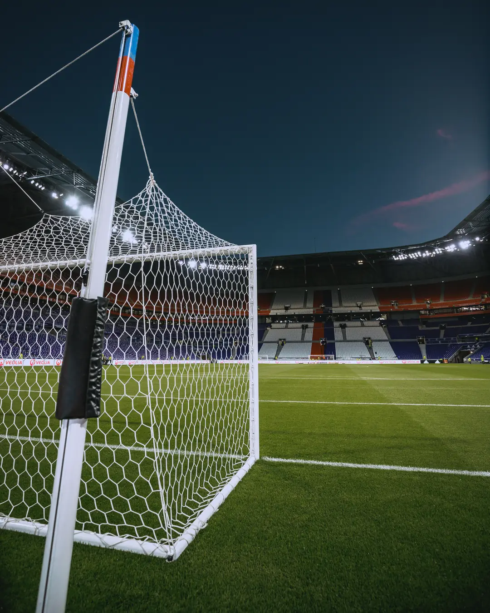

Caso n.º 14 · Fútbol
Sobre este caso
El caso n.º 14 está cerrado. Fue el caso diario del 14 de noviembre de 2026 y su tema fue Fútbol. Los detectives de aquel día tuvieron dos retos: cinco imágenes que clasificar en fotografías reales y generadas por IA, y cinco afirmaciones de una frase que clasificar en datos y bulos.
- Imágenes generadas por IA: 3 de 5
- Bulos: 2 de 5
Aquí tienes todas las respuestas. Cada imagen generada por IA trae el prompt que la creó, y cada afirmación, la verdad que hay detrás y los detalles que merece la pena recordar, para que compruebes qué se te escapó.
Uno de los bulos: «En un partido de Conference League en 2025, el VAR se averió por culpa de una gaviota.» La verdad: No hay registro de que una gaviota averiara el VAR en un partido de la Conference League.
¿Quieres afinar la vista? Lee nuestra guía para detectar imágenes de IA o nuestra guía para detectar un bulo y luego juega el caso de hoy.
Imágenes
-
Imagen 1

REAL
Fotografía real
-
Imagen 2

REAL
Fotografía real
-
Imagen 3

IA
La confesión del sospechoso
Partido de fútbol aficionado en un campo de tierra de barrio, visto desde detrás de la valla metálica, con jugadores con petos de colores y las porterías algo oxidadas; luz de tarde.
-
Imagen 4

IA
La confesión del sospechoso
Niños jugando un partido en una pista de cemento de un colegio, con mochilas amontonadas haciendo de poste y la pelota en el aire; encuadre torcido.
-
Imagen 5
IA
La confesión del sospechoso
Un grupo de amigos viendo un partido en la tele de un bar, foto desde atrás con la pantalla al fondo, vasos en la barra y gente gesticulando; marcador ilegible y luz cálida.
¿Dato o Bulo?
-
Afirmación 1
BULO «En un partido de Conference League en 2025, el VAR se averió por culpa de una gaviota.»
No hay registro de que una gaviota averiara el VAR en un partido de la Conference League.
- En Turquía, un jugador amateur hizo RCP a una gaviota golpeada por un balón.
-
Afirmación 2
BULO «En la Serie C italiana se traspasó a un jugador a cambio de 2.000 butacas de plástico.»
No hay registro de un traspaso así en la Serie C ni en el fútbol profesional italiano.
- Sí hubo pagos raros: Ángel Di María por 30 balones en sus inicios.
- Ion Radu fue traspasado por dos toneladas de carne.
-
Afirmación 3
DATO «En la tanda de penaltis más larga de la historia se lanzaron 56 penaltis.»
En mayo de 2024, en Israel, el SC Dimona venció 23-22 al Shimshon Tel Aviv tras 56 penaltis.
- Era la semifinal del playoff de ascenso a la tercera división israelí.
-
Afirmación 4
DATO «Noruega es la única selección que nunca ha perdido contra Brasil en un partido oficial.»
Noruega mantiene un récord invicto ante Brasil: dos empates y dos victorias en cuatro partidos.
- Entre ellos, el Mundial de 1998 y varios amistosos.
-
Afirmación 5
DATO «El partido con más goles de la historia terminó 149 a 0.»
El 31 de octubre de 2002, en la liga de Madagascar, el AS Adema ganó 149-0 al SO l'Emyrne.
- Los jugadores del SO l'Emyrne marcaron en propia puerta a propósito.
- Era una protesta contra el arbitraje de un partido anterior.